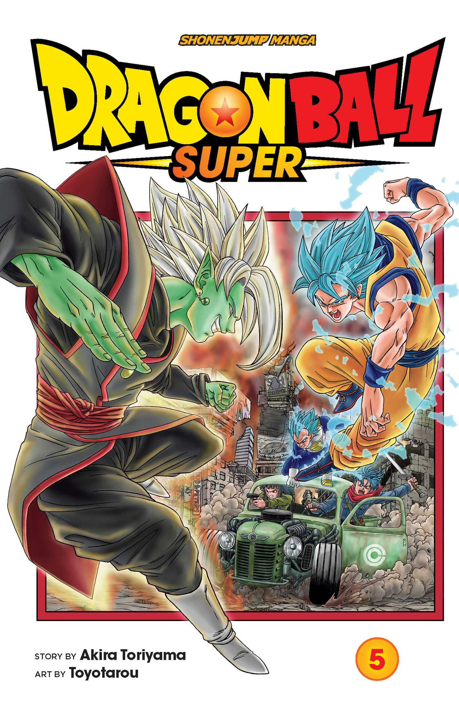

QUE ES UN MANGA?
El manga es un estilo de cómic japonés que se caracteriza por su narrativa gráfica y su
estilizado arte
visual. Este medio abarca una amplia gama de géneros y temas, desde aventuras épicas y fantasía hasta
romances, ciencia ficción, horror y más. Los mangas se leen de derecha a izquierda, siguiendo el formato
tradicional japonés, y suelen presentar personajes con expresiones emocionales intensas y dinámicas, así
como tramas complejas y cautivadoras. Su influencia se extiende más allá de Japón, ganando popularidad en
todo el mundo debido a su diversidad creativa y su capacidad para atraer a lectores de todas las edades.

MY HERO ACADEMIA
"My Hero Academia" es un manga y anime creado por Kohei Horikoshi que nos sumerge en un
mundo donde la
mayoría de la población ha desarrollado habilidades sobrenaturales llamadas "Quirks". La historia sigue
a
Izuku Midoriya, un joven sin poderes en un mundo donde tener un Quirk es lo habitual. A pesar de esto,
Izuku
sueña con convertirse en un héroe como su ídolo, All Might, el símbolo de la paz. Su vida cambia
radicalmente cuando se encuentra con All Might y hereda su Quirk "One For All". Comienza a asistir a la
Academia U.A., una prestigiosa escuela para jóvenes aspirantes a héroes, donde conoce a nuevos amigos y
rivales. A lo largo de la serie, Izuku y sus compañeros enfrentan desafíos, peligros y villanos
poderosos
mientras aprenden a dominar sus habilidades y descubren lo que realmente significa ser un héroe en un
mundo
lleno de adversidades y conflictos. La historia se desarrolla con intensos enfrentamientos, profundas
relaciones entre personajes y un enfoque en la superación personal y el crecimiento, creando una trama
emocionante y llena de acción que ha cautivado a una amplia audiencia tanto en Japón como en todo el
mundo.

DRAGON BALL SUPER
"Dragon Ball Super" es un manga escrito por Akira Toriyama y dibujado por Toyotarou, que se basa en la
serie de anime del mismo nombre. La historia tiene lugar después de los eventos de "Dragon Ball Z" y
sigue las aventuras de Goku y sus amigos, quienes se enfrentan a desafíos cada vez más poderosos y
peligrosos. La trama se inicia con la llegada de Beerus, el Dios de la Destrucción, quien busca al
legendario Super Saiyan God. A partir de aquí, se desarrollan diferentes sagas, como la de Golden
Freezer, el Torneo de la Champa y el Torneo del Poder, donde diversos universos se enfrentan en una
batalla para evitar la destrucción. Durante estas sagas, se presentan nuevos personajes poderosos como
Hit, Jiren y otros luchadores de diferentes universos. La serie explora la evolución de los Saiyan, la
introducción de nuevas transformaciones, así como relaciones familiares y amistades profundas entre los
personajes. Con acción trepidante, momentos emocionantes y giros inesperados, "Dragon Ball Super"
continúa la legendaria historia de la franquicia "Dragon Ball", deleitando a los fanáticos con
emocionantes combates y un universo en constante expansión.

BLACK CLOVER
"Black Clover" es un manga escrito e ilustrado por Yūki Tabata que sigue la historia de Asta, un joven
sin poderes mágicos en un mundo donde la magia es omnipresente y determina el estatus social. Asta, a
pesar de no poseer habilidades mágicas, aspira a convertirse en el Rey Mago, el título más alto para un
mago en su reino. Junto con su amigo de la infancia, Yuno, quien es prodigiosamente talentoso en la
magia, ambos aspiran a alcanzar sus sueños. Sin embargo, la vida de Asta cambia cuando obtiene un raro
grimorio de cinco hojas, otorgándole un poder increíble para neutralizar la magia. A través de su
determinación y trabajo duro, Asta se une a los Caballeros Mágicos de los Búhos Negros, un escuadrón con
miembros peculiares y poderosos, para enfrentar desafíos, proteger el reino y descubrir más sobre el
misterioso origen de su grimorio, mientras enfrenta enemigos formidables y se desarrolla como un mago
excepcional a pesar de su carencia inicial de habilidades mágicas. A lo largo de la historia, Asta y sus
compañeros se embarcan en emocionantes aventuras, luchas épicas y exploran los vínculos de amistad y
superación personal en un mundo lleno de magia y misterios.

BLUE LOCK
"Blue Lock" es un emocionante manga de deportes y drama escrito por Kaneshiro Muneyuki e
ilustrado por Nomura Yusuke. La historia se sitúa en un mundo donde el fútbol japonés está en crisis, y
se centra en la solución radical propuesta por la Asociación de Fútbol de Japón: crear un programa de
desarrollo para encontrar y formar al próximo delantero de clase mundial. Este proyecto, conocido como
"Blue Lock", reúne a 300 talentosos delanteros juveniles en una instalación de entrenamiento de alta
tecnología y aislamiento. Los jugadores compiten entre sí en una serie de desafíos intensos y
competitivos diseñados para mejorar sus habilidades individuales y colectivas. El protagonista, Yoichi
Isagi, es uno de los participantes, y junto con otros aspirantes, se embarca en una emocionante y
desafiante odisea llena de rivalidades, amistades, conflictos y autodescubrimiento. A medida que avanza
la historia, los personajes se enfrentan a sus propias limitaciones, superando obstáculos personales y
enfrentando dilemas éticos en su búsqueda por convertirse en el mejor delantero y liderar al equipo
nacional japonés hacia la gloria en el escenario internacional del fútbol.

DEMON SLAYER
"Kimetsu no Yaiba" (conocido como "Demon Slayer" en inglés) es un manga creado por Koyoharu Gotouge. La
historia sigue a Tanjiro Kamado, un joven bondadoso que vive en una montaña con su familia.
Trágicamente, su vida da un giro cuando regresa a casa y descubre que todos han sido brutalmente
asesinados por demonios, excepto su hermana menor Nezuko, quien ha sido convertida en un demonio.
Determinado a vengar a su familia y encontrar una cura para Nezuko, Tanjiro se une a los Cazadores de
Demonios, un grupo dedicado a erradicar a estas criaturas. A lo largo de su viaje, Tanjiro desarrolla
habilidades como espadachín y encuentra camaradas en otros cazadores, incluidos Zenitsu y Inosuke. La
serie explora la lucha de Tanjiro contra los demonios, su búsqueda de redención y la relación con su
hermana mientras enfrenta desafíos cada vez más peligrosos y descubre los misterios detrás de estos
seres sobrenaturales. Con su mezcla de acción emocionante, personajes entrañables y una narrativa
emocional, "Demon Slayer" se ha convertido en un éxito mundial, cautivando a los lectores con su
intriga, desarrollo de personajes y espectacular arte visual.

ONE PIECE
"One Piece" es un manga épico creado por Eiichiro Oda que sigue la odisea de Monkey D.
Luffy y su tripulación pirata en busca del legendario tesoro conocido como el "One Piece". Luffy, dotado
con el poder de la fruta del diablo que le otorga la elasticidad de goma, sueña con convertirse en el
Rey de los Piratas. A lo largo de su viaje por el vasto océano Grand Line, recluta a valiosos aliados
como el espadachín Roronoa Zoro, la navegante Nami, el francotirador Usopp, el cocinero Sanji, la
arqueóloga Nico Robin, el carpintero cyborg Franky, y el esqueleto
músico Brook. En su búsqueda, se enfrentan a poderosos enemigos como la Marina, liderada por el temible
Almirante de
la Flota Sengoku y el Almirante Akainu, así como a otros piratas como el infame Barbanegra y los Yonko,
los cuatro emperadores más poderosos del mar. A medida que avanzan, descubren secretos sobre la historia
mundial y desafían el Gobierno Mundial en su búsqueda de libertad y justicia. Con su combinación de
acción emocionante, "One Piece" se ha convertido en uno de los mangas más queridos y exitosos de todos
los tiempos, cautivando a lectores de todas las edades en todo el mundo.